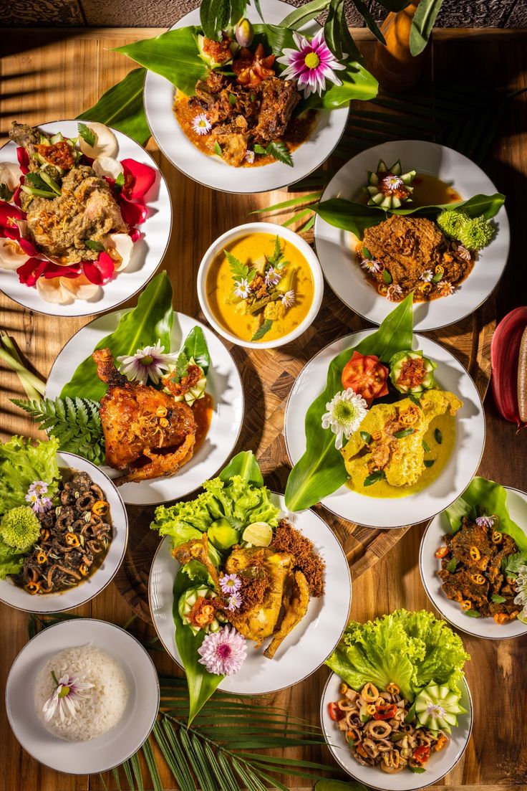
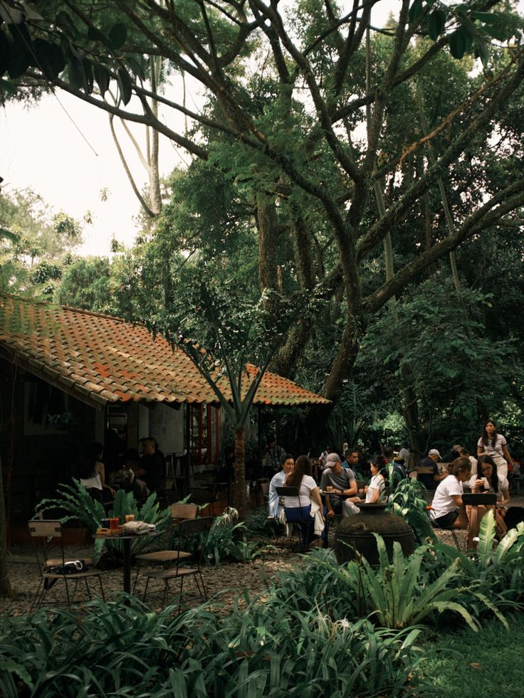
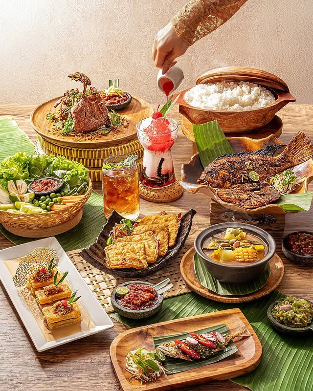
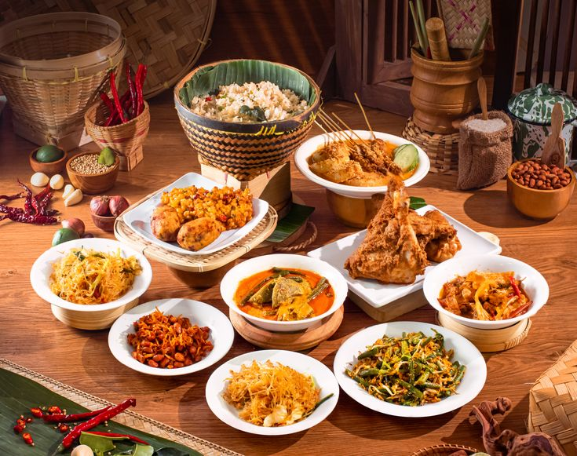

Menu Makanan
Nikmati berbagai makanan khas Nusantara favorit kami.


Menghadirkan cita rasa autentik Indonesia dengan bahan pilihan dan resep warisan budaya.


Bumi Rasa adalah tempat untuk menikmati berbagai hidangan khas Nusantara dengan cita rasa autentik. Kami menggunakan bahan-bahan pilihan dan resep tradisional untuk menghadirkan pengalaman kuliner Indonesia yang lezat dan berkesan.
Dengan suasana yang nyaman dan pelayanan yang ramah, Bumi Rasa cocok untuk berkumpul bersama keluarga, teman, maupun menikmati makanan khas Indonesia.
Nikmati berbagai makanan khas Nusantara favorit kami.
Lengkapi hidanganmu dengan minuman segar khas Bumi Rasa.

Suasana dan hidangan Bumi Rasa.


⭐⭐⭐⭐⭐
"Tempatnya nyaman dan pelayanannya ramah. Makanannya terasa seperti masakan rumahan, tetapi penyajiannya modern."
⭐⭐⭐⭐⭐
"Soto ayamnya gurih dan porsinya pas. Harganya juga cukup terjangkau."